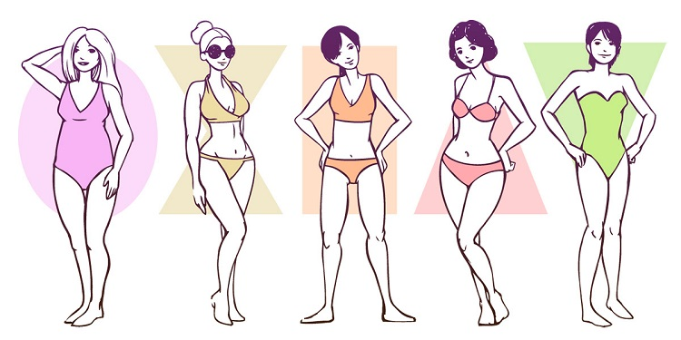

Prendas según tu tipo de cuerpo
Forma de tu cuerpo
Nos encontramos con muchos tipos de figuras, pero principalmente podemos clasificarlas en 5 grupos:
- Oval o Manzana: escotes de pico, prendas lisas, pantalones rectos o de campana, o vestidos de corte imperio
o con cinturón
- Reloj de arena: vestidos cortos o largos pero sin demasiado vuelo, faldas tipo lápiz, blusas o camisas de
escote redondo o en pico, tambien holgadas pero no oversize, pantalones skinny
- Rectangular: acentuar la cintura, ya sea con pantalones altos y cinturón, vestidos entallados en esta zona y
forma de campana, chaquetas cortas, eescotes en pico
- Triángulo o pera: escotes tipo barco o en pico, mangas fruncidas, hombreras, chaquetas cortas y estampados
- Triangulo invertido: estampados excepto rayas verticales, pantalones de pinzas, vestidos plisados o de
cinturilla, corte imperio, tacones, en la parte de arriba, tonos oscuros y escotes redondos o largos

Ir a la página principal